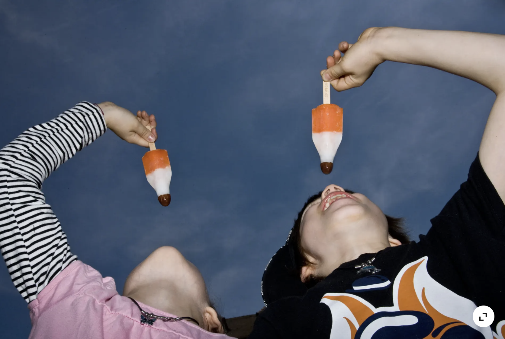
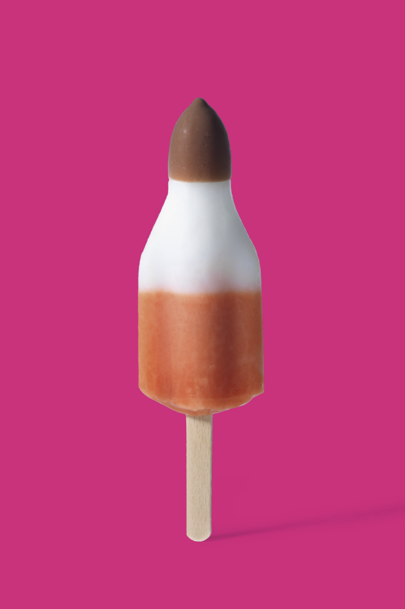
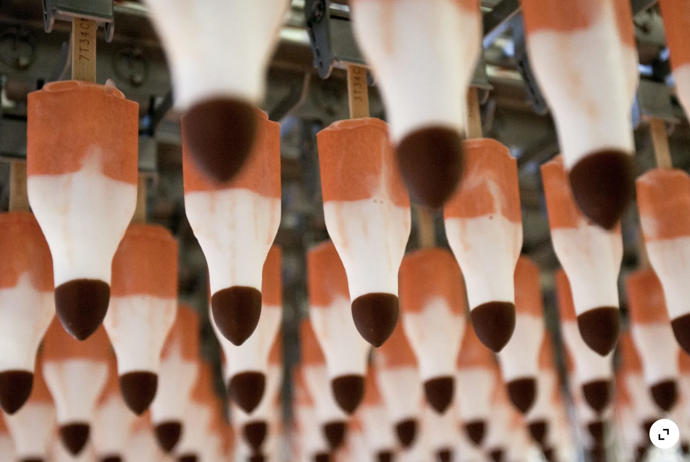
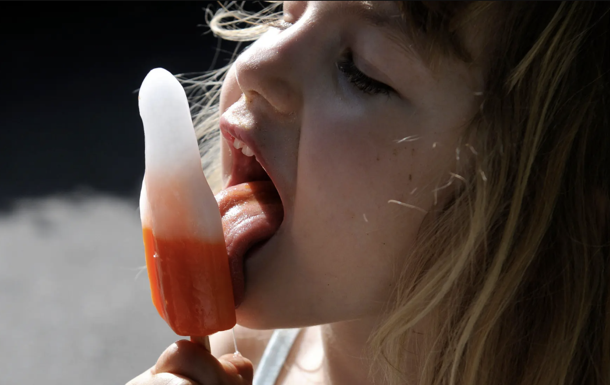

Schoggi
A de Spitze het d'Glace e dünni Schoggihülle. Welli schö knackig, süess isch und dedurch bim inebiesse de perfäkti Start bietet.
A de Spitze het d'Glace e dünni Schoggihülle. Welli schö knackig, süess isch und dedurch bim inebiesse de perfäkti Start bietet.
I de Mitti chunt en süessliche Ananasgschmack. Schö summerlich und erfrischend.
Am Schluss wartet frische, leicht säuerliche Orange, der klassische Abschluss einer Raketen‑Glace.
D'Rakete isch im 1969 entstande, also im gliche Johr wie die erst Mondlandig. Inspiriert vo de Raumfahrt und dem Zuekunftsgfühl, het Frisco zur damalige Zit eini vu de bekanntiste Glace i de Schwiz uf de Markt brocht. Bis Hüt ghört d'Rakete zu de meistverkaufste Wasserglace i de Schwiz und weckt bi vielne Mensche Erinnerige a Summer, Badis, und ene sini Kindheit.
Dank dem historische Ereigniss vu de Apollo-11-Mission isch üsi Glace entstande.
Scho über 50 Johr begleitet d'Raketeglace Generatione.
Sit em afang wird d'Glace bi üs i de Schwiz produziert.
Jo tatsächlich chammer sich au e Glace i de Diät gönne mit nu 110 Kalorie pro Stück!




Was isch dis Lieblingsglace? 🍦